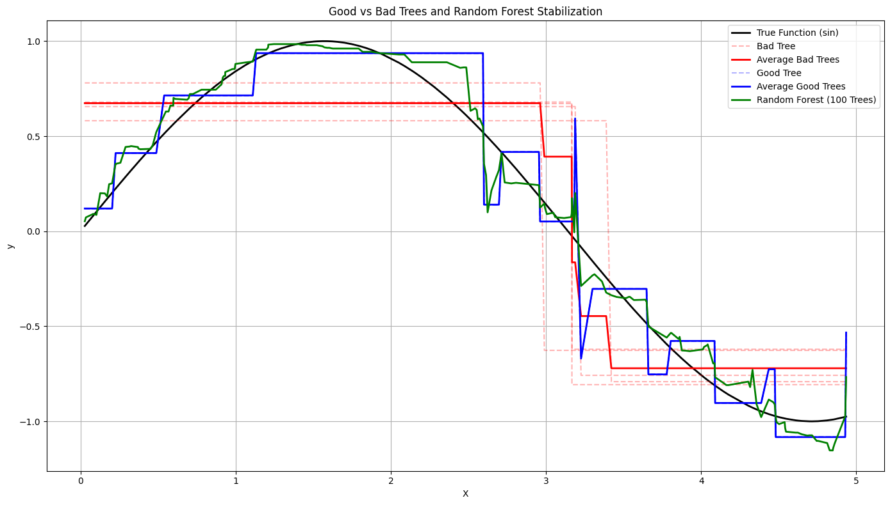

A probabilistic analogy that illuminates why ensemble methods work — not just how.
Shyam Banerjee · Summer 2025 · Penn State AstroStats
Random Forests emerged as one of the most powerful yet intuitively appealing ensemble models. What started as curiosity about how the algorithm handles feature bias soon led to a satisfying analogy with one of probability theory's cornerstone results: the Law of Large Numbers.
A Random Forest is an ensemble of decision trees trained on bootstrap samples of the data, each using a random subset of features at each split. Predictions are aggregated by averaging (regression) or majority vote (classification).
f̂(x) = (1/B) Σ f̂_b(x)If a Random Forest randomly samples features at each split, isn't there a risk that weakly correlated predictors might dilute the power of strong ones?
The answer lies in scale. While a single tree may randomly miss important features, across many trees the stronger predictors appear in sampled subsets many times. When they do appear, they win the local competition — being selected because they yield better split criteria. Stronger features shape the forest more than weaker ones not through explicit weighting, but because they consistently perform better when they get the chance.
Decision trees are high-variance, low-bias estimators. They overfit, they are sensitive to small perturbations in the data, and they are deeply greedy in their splitting strategy. Random Forests convert this weakness into strength by averaging over many such imperfect trees, stabilising the output and smoothing away the variance.
The variance reduction is exactly the mechanism of the LLN: Var(f̄) = Var(f̂_b)/B, which shrinks as B grows, assuming low inter-tree correlation.
To visualise this, I trained shallow "bad" trees (max depth 1), deeper "good" trees (max depth 4), and a full Random Forest (100 trees, max depth 4) on synthetic data generated from y = sin(x) + ε.

Random Forests are elegant precisely because they embrace randomness. By averaging imperfect learners, they unlock a form of statistical wisdom that reflects one of the deepest results in probability. This exploration sharpened my understanding of ensemble methods and demonstrated something more general: that intuition and formal probability theory can illuminate each other beautifully.
The simulation notebook is available on GitHub.